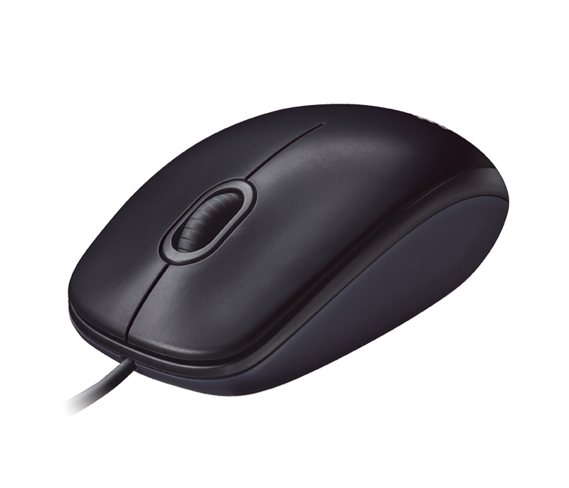
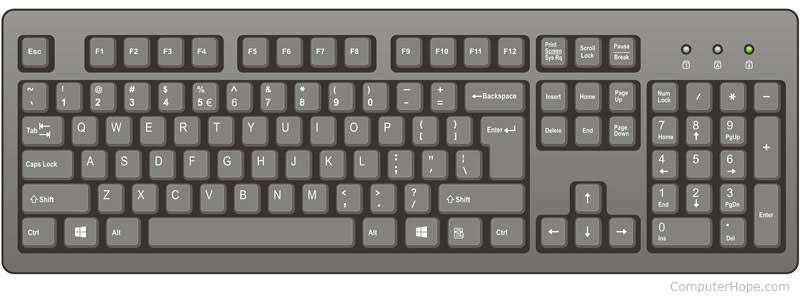

One of the earliest machines designed to assist people in calculations
was the abacus which is still being used some 5000 years after
its invention
In 1642 Blaise Pascal invented an adding machine based on mechanical
gears in which numbers were represented by the cogs on the wheels
Charles Babbage KH FRS (/ˈbæbɪdʒ/; 26 December 1791 – 18 October 1871) was an English polymath.[1] A mathematician, philosopher, inventor and mechanical engineer, Babbage originated the concept of a digital programmable computer

A central processing unit (CPU) is the electronic circuitry within a computer that carries out the instructions of a computer program by performing the basic arithmetic, logic, controlling, and input/output (I/O) operations specified by the instructions.
The computer industry has used the term "central processing unit" at least since the early 1960s.[1] Traditionally, the term "CPU" refers to a processor, more specifically to its processing unit and control unit (CU), distinguishing these core elements of a computer from external components such as main memory and I/O circuitry.
The form, design, and implementation of CPUs have changed over the course of their history, but their fundamental operation remains almost unchanged. Principal components of a CPU include the arithmetic logic unit (ALU) that performs arithmetic and logic operations, processor registers that supply operands to the ALU and store the results of ALU operations and a control unit that orchestrates the fetching (from memory) and execution of instructions by directing the coordinated operations of the ALU, registers and other components.
a computer keyboard is a typewriter-style device[1] which uses an arrangement of buttons or keys to act as mechanical levers or electronic switches. Following the decline of punch cards and paper tape, interaction via teleprinter-style keyboards became the main input method for computers

Keyboard keys (buttons) typically have characters engraved or printed on them,[2] and each press of a key typically corresponds to a single written symbol. However, producing some symbols may require pressing and holding several keys simultaneously or in sequence.[3] While most keyboard keys produce letters, numbers or signs (characters), other keys or simultaneous key presses can produce actions or execute computer commands.
In normal usage, the keyboard is used as a text entry interface for typing text and numbers into a word processor, text editor or any other program. In a modern computer, the interpretation of key presses is generally left to the software. A computer keyboard distinguishes each physical key from every other key and reports all key presses to the controlling software. Keyboards are also used for computer gaming — either regular keyboards or keyboards with special gaming features, which can expedite frequently used keystroke combinations.